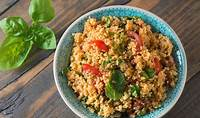
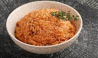

Foods
North Africa

North Africa has a very large and tasty cuisine. One staple dish they eat is couscous made from steamed semolina. It can be served as an accompaniment with tajine,
paired with vegetables or enjoyed on its own. There is a dish called B'stilla, originating in Fez, Morocco its a dish that dates back to the Ummayyad Caliphate made from
bird meat with a sweat and sour taste. There is an Egyptian dish called Medames which is a common dish in cities like Cairo and Giza.
West Africa

West african cusine is full of many fun and delicious flavours. A popular dish from Nigeria called Jollof Rice is a tomato rice dish bursting with spices,
vegetables and optional meat its a one pot wonder that rivals any tomato rice dish. There is also a dish from Senegal named Yassa, a marinated chicken or fish is grilled to
smoky perfection with mustard, lemon, caremalised onions, garlic and chillis.
Southern Africa
Southern African cuisine is a delightful fusion of flavors traditions and local ingredients. A staple in places like Zimbabwe, Namibia and modern day South Africa is biltong
which is a salty dried meat with is normally beef. The word Biltong comes from Dutch where the word "bil" means rump and "tong" means tongue. They have a long sausage called Boerewors
which is a sausage with at least 90% meat and its thicker than a jumbo sized hotdog.